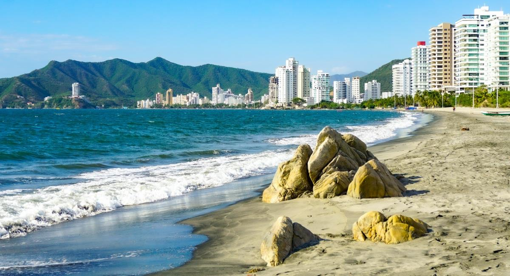
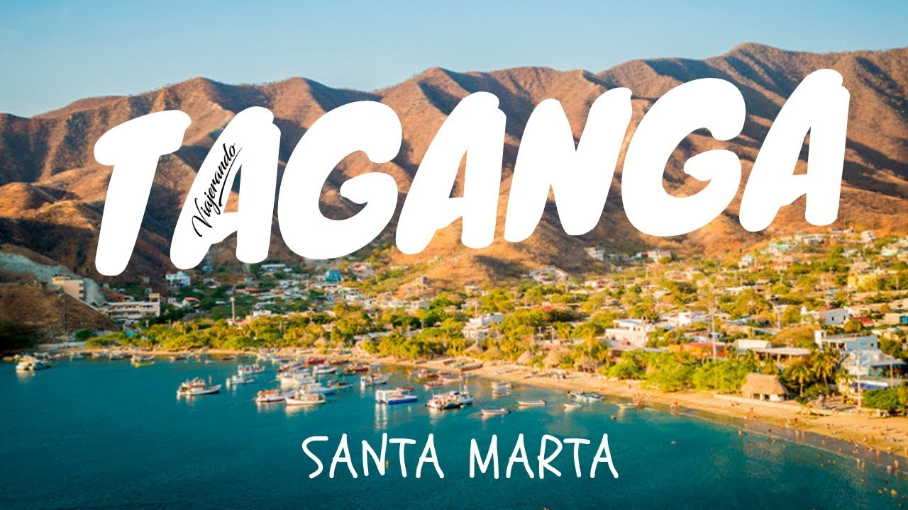
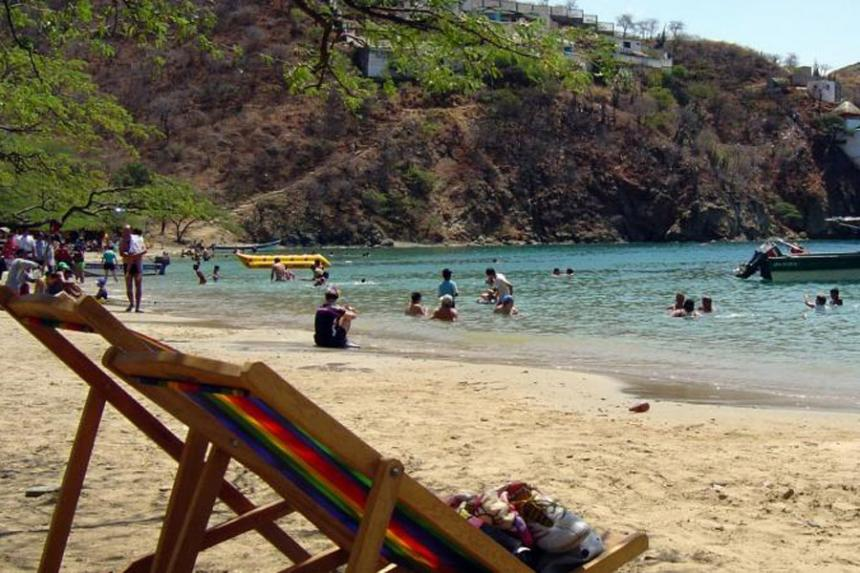
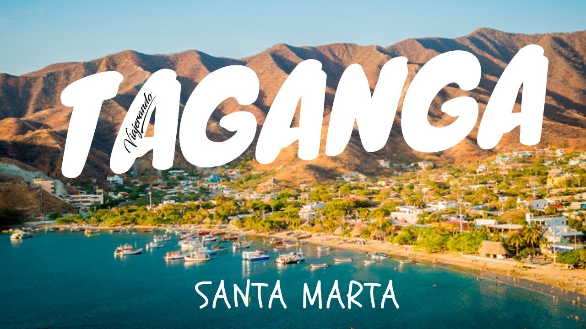
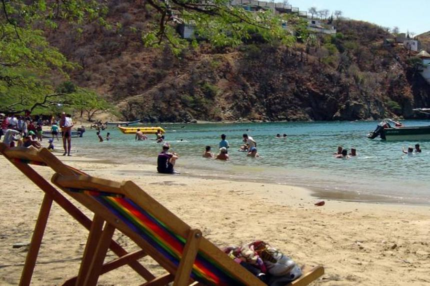

PLAYAS TURISTICAS
Descubre el paraíso en nuestras increíbles playas.
Descubre el paraíso en nuestras increíbles playas.
El Rodadero es un balneario de la ciudad de Santa Marta, a orillas del mar Caribe en Colombia. Corresponde a la zona norteº de la comuna de Gaira-Rodadero y se caracteriza por sus playas de arena clara y sus edificios de gran altura. Su desarrollo comenzó a mediados de los años 1950 y desde entonces se ha convertido en uno de los principales destinos turísticos del país
Bahia Concha es una hermosa playa en Santa Marta ubicada a solamente 45 minutos aproximadamente del centro de la ciudad. Si estás en Santa Marta y buscas disfrutar una hermosa y tranquila playa en Santa Marta para relajarte y desconectarte del mundo exterior, te recomendamos visitar la playa Bahía Concha.Bahia Concha es una de las playas más visitadas en Santa Marta y la temperatura de esta playa es perfecta para disfrutar un delicioso baño en sus tranquilas aguas.


Taganga es un corregimiento de Santa Marta, en Magdalena (Colombia). Tiene 3.000 habitantes. Está compuesto por un poblado a orillas de la bahía del mismo nombre cuya actividad tradicional ha sido la pesca, aunque recientemente el turismo ha cobrado una gran preeminencia. El acceso es posible por carretera, desde el centro de Santa Marta. También es posible ir a Playa Cristal desde Taganga en lancha, o caminar hasta Playa Grande a través de un sendero ecológico que atraviesa la montaña y dónde vas a tener una vista muy linda de todo el pueblo.
 


